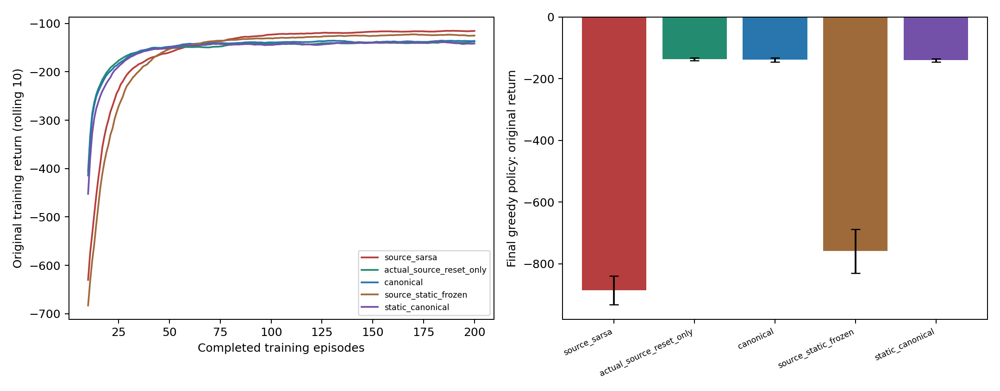
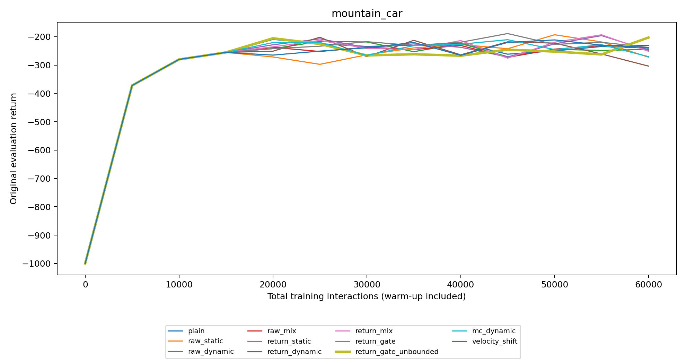
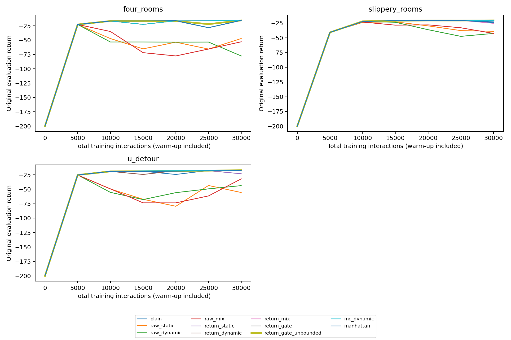

蚁群 PBRS：从复现诊断到改进假设验证
修正学习循环的收益得到确认；探索性对照支持新塑形优于原始信息素，但混合本身的额外收益尚未确认。
本报告按“公开实现问题 → 因果修正 → 与论文对照 → 新方法及独立验证 → 同类文献定位”组织。所有性能均以环境原始奖励评价，不以塑形奖励评分。
本轮新增 3660 次训练执行，合计 154,694,199 次实际训练交互；另复用上一轮作者代码的 100 种子对照。新方法独立确认：MountainCar 80 种子，其余三种场景各 30 种子。初筛 8 种子与确认种子互不重叠。
1. 研究背景与准确的问题表述
我们想研究的是：如何把轨迹经验变成有用的塑形势函数，从而在有限训练量下提高原始回报。2019 年工作以轨迹质量更新信息素，再把信息素用于动作启发或奖励塑形。论文表 7 中静态塑形较早找到训练中的最好轨迹；其公开实现却在我们的复现条件下出现“训练曾成功、冻结后的策略大多失败”的现象。
因此，研究起点应写成“公开实现的可重复性和最终策略稳定性存在问题”，不能写成“原论文被证明错误”。原论文的最佳轨迹指标与我们新增的最终策略评估是不同问题，必须分别报告。
2. 公开实现为什么差：已确认的主因与尚未确认的原因
已做因果验证的主因是跨回合资格迹。作者 TrueOnline 分支没有像 Replacing 分支那样在每回合清空 trace，但会重置旧 Q 值等回合变量。上回合留下的资格迹于是把新回合 TD 误差分配给上回合状态。我们没有只靠阅读代码推断：直接调用作者原来的完整 learn()，只在每次调用前增加 trace.fill(0)，其余动作、奖励、探索日程和更新公式不变。
只加这一步，配对原始回报提升为 +748.95 [+700.61, +793.28]；6 项修正检验统一 Holm 校正后 p=0.000300。100 个种子中 99 个改善，1 个变差。直接作者代码与我们自己的 reset 实现，100 次运行的训练长度、回报与指标一致，最终权重最大数值误差仅 1.20×10⁻¹²。证据见 direct_reset_equivalence.json。
第二个实现差异是 Dutch trace 的时序。标准算法先衰减旧 trace，再加入新贡献；公开代码先加入贡献、最后衰减，同时沿用标准公式中的 γλ 因子。我们按标准公式修正，并用独立的稠密向量参考计算验证数值。然而修正后的最终均值并未进一步提高：相对“只清空”，-1.55 [-9.22, +5.69]，校正 p=1.000。所以不把它说成主要性能原因。
静态 PA 另外修正了真实初始势、终止势归零及真正冻结的局部更新开关。前一轮直接作者代码的逐项消融已保留在 author_direct_comparison_20261120；其中部分单项的置信区间跨零。本轮静态组合修正获得大幅改善，但不把组合效果全部归因于某一个边界修正。
不能由此解释完“为何静态未复现论文的提前学习优势”：公开仓库没有当年使用的静态信息素文件；论文文字和公开脚本在目标位置、奖励及塑形公式上存在歧义；我们只能重新生成先验。多份成熟先验、同编码对照、文字／公式敏感性实验仍未还原静态加速。具体责任比例尚未被识别。

左图是训练中回报的 10 回合滚动均值；右图是训练结束后冻结策略的原始回报。左图好不等于右图好。右图误差棒为跨种子均值的近似 95% 区间。
训练过程中Q还在不断更新，能够生成成功轨迹，不等于冻结后的模型已学会稳定策略。源实现最终策略在独立评估中确实大多失败；这里不以训练中的偶尔成功来替它辩护。
3. 不仅对比本机复现，也对比论文数据
使用作者公开分析脚本的定义：ABS 是每次运行所有训练回合中的最短轨迹记录的均值；SARSA／PA 的记录为实际步数减 1。AIBS 是首次达到该最好记录的回合索引，从 0 开始。二者越小越好。AIBS 不是达到同一预定成功门槛的时间，因此更晚找到一个更短的新纪录，也会增大 AIBS。
可以说的：我们修正后的静态 ABS=100.33，在这项统计上优于论文静态的均值 101.4，也明显改善本机最终回报。不可以说的：全面超过原论文。我们的 AIBS=115.3 比论文静态的 75 更晚；原论文未报告可直接对齐的最终贪心回报；修正后的普通 SARSA 的 ABS=99.79 也已经更好，不能把这个收益归给蚁群。
此处是带条件说明的数据对照，不是跨实验的显著性检验。原论文报告的误差与公开绘图代码的区间标记不完全一致，且缺少其逐种子原始数据。没有计算“我们显著超过论文”的 p 值，也不以现代机器的秒数对比其运行时间。我们的静态ABS100.33对应真实物理步数101.33；论文表格的索引起点无法从原始数据再次核验，因此尤其不应将约1步的名义差当作可靠的超越证据。
该部分使用历史 Gym 实现、200 个完整学生回合，单回合上限 1000；静态先验来自固定的独立 HA 教师，1000 回合、111259 次交互。这里评估的是“给定同一已学先验后的学生性能”。先验成本另列，不能与下文总预算实验混为一谈。
4. 我们提出的新想法及其完整流程
新假设：信息素浓度同时混入“访问次数”和“轨迹质量”。直接使用浓度，或者让线上记忆无条件覆盖旧经验，都可能不稳定。我们把信息素改成回报加权的轨迹记忆，归一化为状态价值提示；保留早期静态记忆，再按每个状态收到的新轨迹数控制动态记忆的影响。
对成功轨迹 k，真实奖励序列为 r，长度为 T_k：
G_t = r_t + γr_(t+1) + …，q_k = 1/T_k
每个状态分箱在一条轨迹中仅计一次，采用最后一次访问的 G_t。
W(s) ← .99 W(s) + q_k
M(s) ← .99 M(s) + q_k G_t
V_ant(s) = M(s)/W(s)；没有成功样本时取 −200
Φ_static(s) = .1 V_offline(s)
Φ_online(s) = .1 V_online(s)
β(s) = .5 n_new(s)/(n_new(s)+5)
Φ(s) = (1−β(s)) Φ_static(s) + β(s) Φ_online(s)
F_t = γ Φ(s_(t+1)) − Φ(s_t)，r_shaped = r_original + F_t
先用总预算的前 25% 进行不塑形训练，取到完整回合结束；所有方法此阶段完全相同，Q 值继续保留。冻结此时的离线记忆；此后线上记忆只接收新产生的真实成功轨迹。旧最佳轨迹的反复强化不会被当作新的证据。每 10 个完整回合发布一次新势函数，回合内冻结；终止状态势为零。MountainCar 使用 30×30 状态分箱，网格使用实际格子。没有读取环境最短路线，也没有使用评估轨迹更新。
β(s) 是启发式的局部证据门控，并非统计置信度证明。轨迹质量加权、蒸发、MC 回报、PBRS 和静动态混合各自都有前人基础。课程项目的改进在于这些部件的具体组合、问题定位与实证检验；未声称全领域首次提出。
这里估计的是“成功轨迹条件下、质量加权且采用最后访问”的经验提示，不是无偏Vπ，更不是已经算出的最优V*。未知状态参考值−200、缩放.1、最大混合率.5和计数常数5是初筛前固定的设计参数，不是理论计算出的最优取值；对它们的系统敏感性尚未完成。所有G值都在真实轨迹结束后由已获得奖励计算，执行动作时不偷看未来。
另测试了每次势函数变化限幅为 1 的版本。初筛该限幅版本的 MountainCar 回报为 −272.01，取消限幅的版本为 −164.15，因此锁定不做限幅的版本，再用独立种子确认。这是由初筛得出的选择，不是看到确认结果后换方法。全部方案与负结果保留。
该机制属于“蚁群思想下的轨迹质量加权记忆＋PBRS”。新方案没有独立模拟几千只额外蚂蚁，也没有在动作选择时另加一项 ACO 启发；旧信息通过塑形后的 Q 间接影响后续轨迹。原始信息素控制组仍调用作者的全局更新，并保留其局部更新公式。不能把新方案称为原作者算法的逐行复现。
对一个固定的已发布状态势函数，完整回合满足 ΣγᵗF_t=−Φ(s₀)，因此原始任务目标不因塑形而被替换。程序逐回合验证该等式。势函数跨回合变化的目标是改善有限训练过程，不能据此保证线性近似、固定学习率的 SARSA 必然收敛或更快。
5. 公平测试：场景、方法、成本与结果
所有本轮塑形对照使用同一修正 True Online SARSA、作者 action-specific tile coding、同一学习率和探索率 ε=.025。MountainCar γ=1，网格 γ=.99，λ=.9。采集离线记忆已计入总交互预算。所有方法在相同种子上的初始轨迹哈希完全相同；额外评估不参加学习且各方法评估预算相同。训练预算固定，因此成绩只能表示给定预算下的表现，不能称为已完全收敛。
确认阶段的最终评估是冻结后的贪心策略：MountainCar 用 20 个固定位置起点，随机滑移场景用 20 个评估回合，确定性网格固定起点一次。每个数字先在单个种子内对评估回合平均，再对训练种子平均。数值越接近零越好；负数来自每步惩罚，完全超时为 MountainCar −1000、网格 −200。
MountainCar：最终原始回报与学习过程
四房间：最终原始回报与学习过程
随机滑移四房间：最终原始回报与学习过程
U 形绕行：最终原始回报与学习过程
AUC 是各检查点的原始评估回报对总训练交互积分后除以预算；同一场景中越大越好。它概括整个训练过程，不仅看最后一次。不同场景奖励和时限不同，AUC 不跨场景直接求平均。完整曲线、每次运行的原始数据与模型均保留。


主要检验：新候选是否比各组成部分更好
以下是配对均值差（新候选减对照）及 bootstrap 95% 区间。另做配对随机符号置换检验；4 场景×5 对照共 20 项统一 Holm 校正。正差值代表新候选更好。区间与校正检验回答不同问题，显著性结论按校正 p 值判断。
20 项主要对照中，获得改善证据 0 项，变差证据 0 项，其余未检出差异。没有显著差异不等于两方法等效。把结果写成“全面优于静态、动态及 SARSA”必须同时得到这些对照的支持；本报告不做这样的预设。
次要检验：简单原始信息素混合是否足够
这组是事先锁定的次要假设，其检验族单独标记。即使在某场景优于原始静态／动态，也不能将它替代主要候选或隐去普通 SARSA 的成绩。
探索性解释：新势函数组合与原始信息素浓度比较
以下8项是看过主要确认结果后增加的解释性比较，均使用同一固定确认集，候选方法没有重新调参；仍对这8项作Holm校正。它们不是预先锁定的主要检验，不能用来替代上面的0项主要优势结论。
三类网格的6项原始浓度对照全部得到改善支持。新候选最终回报分别为U形−17.00、四房间−15.67、滑移−20.32，原始静态为−55.67／−47.23／−38.86，原始动态为−43.73／−77.60／−42.49。因而可以讲“对直接使用原始浓度的单一方法，在障碍和随机性场景观察到优势”。但经过相同回报校准的单独静态／动态也很强，尚不能把该组合收益归因于混合门控本身。
MountainCar的新候选均值−202.74，校准静态−247.71、校准动态−303.62、固定混合−251.24、普通SARSA−240.13；纯速度势为−214.00。对动态校准的均值差为+100.88，单项95%区间[30.42,173.92]，但20项校正p=.124，属于值得继续验证的改善迹象。对普通SARSA的区间仍跨零。另做的20项学习曲线AUC解释性检验也未发现校正后优势，不能宣称稳定加速。
更强的补充对照：保留全部经验，并对齐不限幅设置
主实验的“校准纯动态”指势函数只使用后续新轨迹，Q仍保留全部训练。为避免把丢失早期信息、或更新限幅造成的差异当作混合收益，补充了保留所有早期轨迹的动态估计、同样保留全部轨迹的无权重MC，以及与新候选对齐的不限幅动态／MC／固定混合。候选及其超参数没有改动；这些补充是在看到主结果后增加的更强对照，20项作为一个探索性检验族。
强基线使解释发生了重要变化。MountainCar保留全部经验的动态校准均值为−208.01，不限幅为−209.75，已接近新候选−202.74；保留全部经验且不限幅的无权重MC甚至为−195.59。20项补充检验均未检出新候选优势。因此，原来相对“只用后续数据的动态”约100分的均值差，大部分在保留早期经验后消失；这提示经验保留比复杂门控更关键，但对各部件的因果贡献仍应谨慎解释。
不能据此宣称蚁群质量加权或局部门控是必要部件。当前可支持的是“修正学习器并校准经验势，可显著改善原始浓度方法在网格中的表现”；尚不支持“所设计的蚁群混合机制稳定优于校准后单独方法、普通MC或普通SARSA”。完整故事应该保留这一否证结果，而不是用较弱动态基线制造创新优势。
6. 结合代码和结果解释：哪些部件有用
资格迹的修正具有最强因果证据：只改一项就出现巨大、可重复的改善；普通 SARSA 无须信息素也获得该收益。标准化学习器以后，塑形收益明显更难获得，说明过去混杂的数值问题可能掩盖了真实方法差异。
原始信息素的局部更新、全局蒸发和最佳轨迹反复沉积，使“浓度”并不等同于“剩余原始回报”。新方法的分子／分母归一化及每轨迹计数，可以在实现层面消除访问次数重复累积的直接影响；但这不自动证明其势函数预测更准，更不自动证明性能更高。线上轨迹也受当前策略影响，独立计数并不等于独立同分布采样。
混合可以减轻坏的单一信息源，也可能只是稀释噪声。回报校准、状态势、局部门控、发布时间同时改变时，整体改善不足以证明每个部件都有贡献。本轮已经用纯静态、纯动态、固定混合、MC 不加权、限幅／不限幅对照缩小解释范围；若门控对固定混合没有差异，就必须保留“门控本身尚无额外证据”的结论。
尤其要查看不加轨迹质量权重的 MC 对照：若它相当或更好，则“只用真实轨迹、正确归一化”可能比“蚁群质量加权”更关键。不能把普通 MC 的收益包装成蚁群独有收益。固定混合若在 MountainCar 有优势、网格无优势，应解释为任务依赖，而非普遍适应性。
也不能用“MDP只看局部，所以无法学习整条轨迹”解释原作者结果。TD本来就通过价值传播学习长期回报；我们测试的是有限样本下势函数的信息质量与更新方式，而非否定MDP对长期决策的表达能力。
7. 同类论文与补充比较
2025 年论文的潜在函数偏移是 Φ_b=Φ+b/(γ−1)，并用指数底数32；其 γ=.99、回合上限200。我们这里的“速度＋1”就是线性势加1，γ=1、上限1000，绝不等于该论文的 b=1。这些比较用来检验启发式与奖励尺度是否值得研究，而不是拿不同预算、不同学习器的数字评选谁最好。2012 年多智能体部分有不同结论，本文不将其单智能体结果泛化到所有任务。
文献共同支持的研究问题是：保留原任务最优目标，只是塑形的必要基础；如何从经验构造、归一化、更新一个在有限训练中有效的势函数，仍需要实证。我们的贡献定位在可重复的实现诊断与具体机制检验，足以构成课程研究；对“比单独方法更优”的主张则严格服从上面的独立验证结果。
8. 可以用于汇报的完整故事
我们从2019年的蚁群启发式塑形出发，最初发现静态塑形未还原论文中的提前学习效果，而且训练中的最佳记录与最终策略表现脱节。直接审计和最小改动验证表明，公开学习循环的跨回合资格迹是最终策略不稳定的重要原因。仅修正这一点，就让100种子的原始回报与成功率大幅改善。
在此基础上，我们没有把学习器修正当作新的奖励塑形贡献，而是在统一、修正后的学习器上研究信息素本身：让浓度表达真实轨迹的回报质量而非重复访问；保留静态经验，同时根据新轨迹证据逐状态混入动态经验。采用互不重叠的初筛与确认种子、多种困难环境、相同总交互预算和原始回报评价，比较该组合与各个组成部分。
修正学习循环的收益得到确认；探索性对照支持新塑形优于原始信息素，但混合本身的额外收益尚未确认。具体优劣与成立范围以主要和次要检验表为准。论文原来的最短轨迹指标在我们的修正实现中可以更好，但“达到自己最好记录的回合索引”并未超过论文静态结果，因此结论应是提高了可重复性与最终策略稳定性，并探索经验势函数的任务依赖收益，而非宣布全面超越原论文。
前几轮固定混合、全局回报趋势自适应及限幅实验中已有负结果，均保留在原目录。它们属于研究过程的反例，不能删除后声称一直稳定改善；本轮确认集也不用于继续调整超参数。
9. 文件、复核方法与来源
study.py 当前数值核心、修正消融、新方法与统一测试
study_v1.py 初筛时冻结的原版本（仅float缓冲小修）
direct_reset.py 调用作者完整learn()，只加回合清空资格迹
test_study.py 独立公式、轨迹计数与环境检查
PROTOCOL.txt / SELECTION.json 试验协议与确认前锁定的选择
repair/ / direct_reset/ 500次修正实验的逐运行数据及模型
discovery/ 所有8种子初筛方案，包含负结果
confirm_mc/ 80种子独立确认
confirm_grids/ 各30种子三场景独立确认
strong_*/ / unbounded_*/ 保留全部经验、同幅度更新的补充强基线
AUDIT.json 完成数、预算、模型有限值和源码冻结核验
analysis.json 全部均值、区间、置换与Holm检验
literature_checks.py/json 文献理论小例的实际复算
literature.json 论文、代码链接与比较条件
evidence_tables.csv 便于队友整理的最终数据表
source_manifest.json 源码与协议的校验值
python -m unittest discover -s research_story_20261120 -p test_study.py -v
python research_story_20261120/literature_checks.py
python research_story_20261120/analyze.py
python research_story_20261120/build_report.py
重跑训练时必须 --out 新目录，防止覆盖既有结果。
依赖：Python3.13、NumPy2.1、SciPy1.15、Numba0.61、Matplotlib3.10、six。
本轮依赖作者兼容层与实际课程环境，均在交付包的同名目录中。作者原始文件保存在 project_2_8_research/author_code/RLACOSarsaLambda_95786b39；paper_static_replication_20261120/paper_author 是为运行而作的兼容副本。我们的模型和信息素先验不是原作者发布的实验产物。